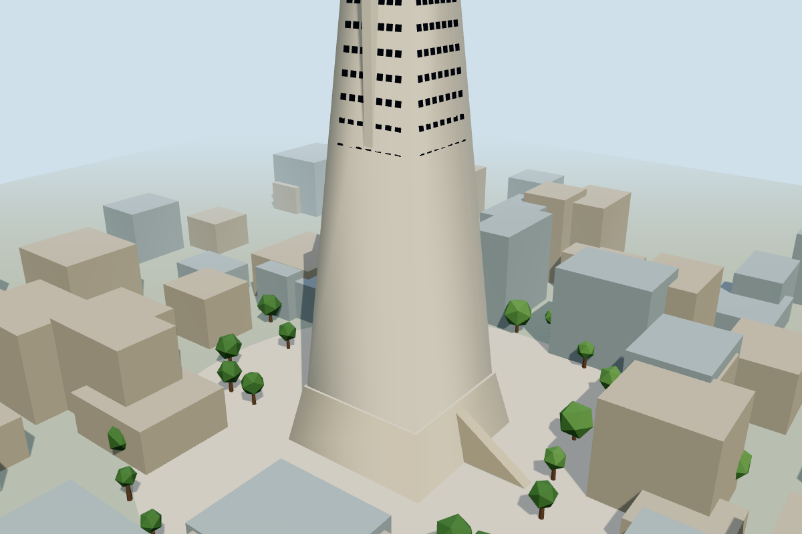
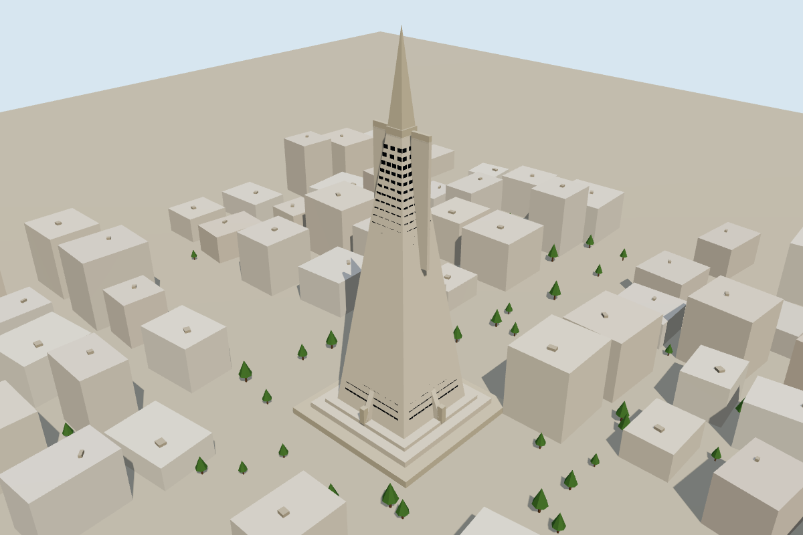
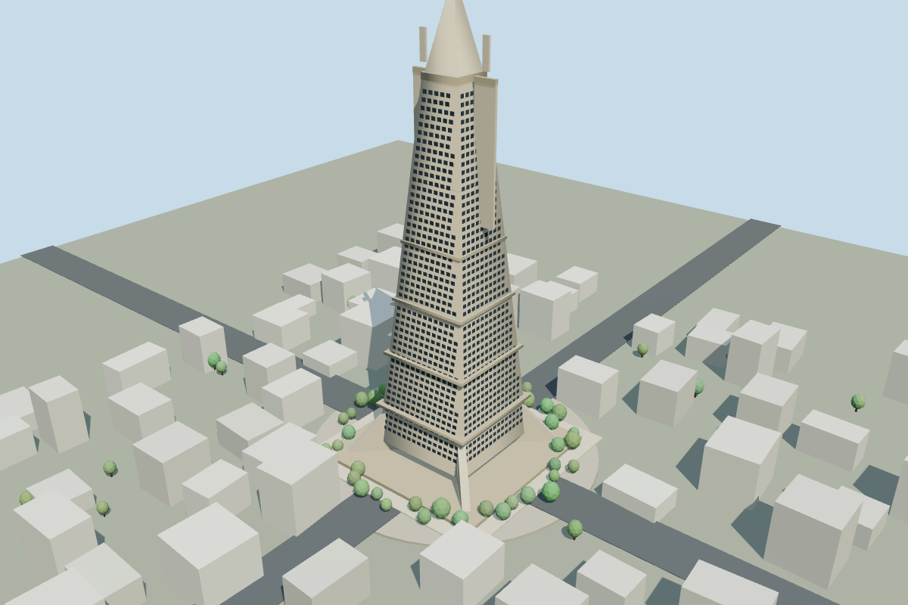
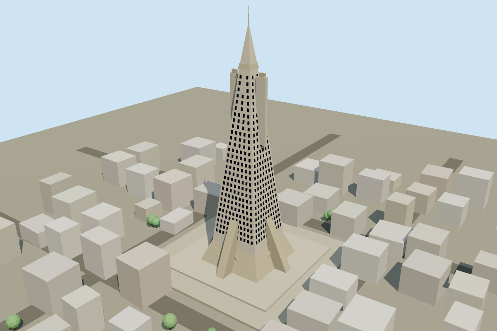
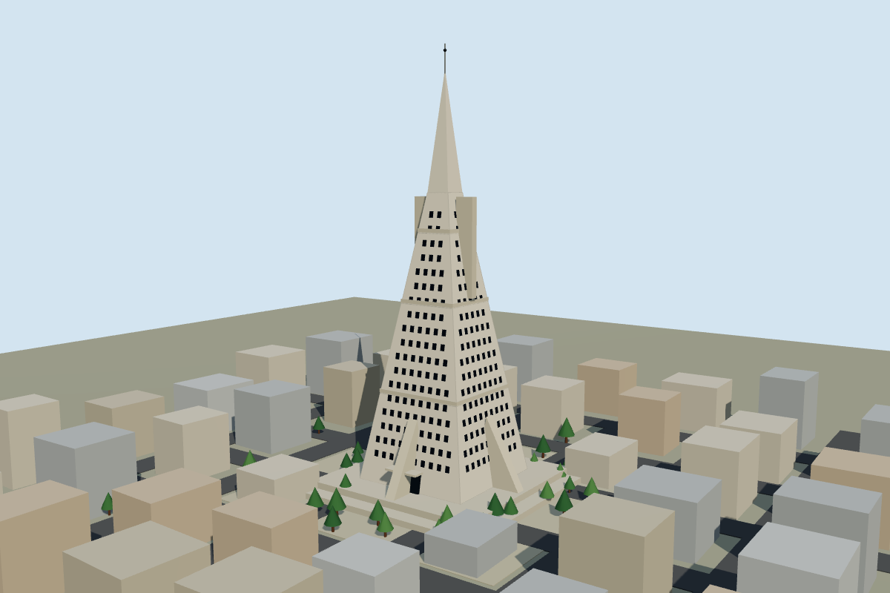

MINIMAL3.5/10 · 5.81s
The top is cropped and the broad blank lower body obscures the intended pyramid shape.
San Francisco · Muse Ember · one original output per effort level

The top is cropped and the broad blank lower body obscures the intended pyramid shape.

Full tower is visible, but window coverage and taper are inaccurate and the tower reads like an obelisk.

Clear taper and many windows, but the spire is cropped and the surrounding grid is generic.

Full taper, spire and exposed base supports fit well. The windows and fins remain simplified.

Balanced tower silhouette and contextual blocks, though some window rows and side fins are imprecise.

Full city diorama with detailed windows, streets and trees. The main tower remains slightly schematic.